Draft · Parts 1–3 · Explanations pending
CS 184 HW3 — PathTracer
Rakesh Mehta
Part 1: Ray Generation and Scene Intersection
Normal shading · Small scenes

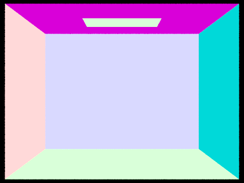
Normal shading · 16 camera samples/pixel · 480 × 360

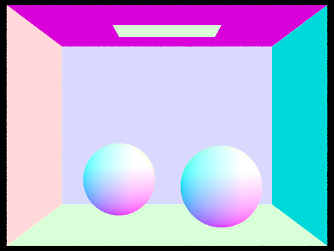
Normal shading · 16 camera samples/pixel · 480 × 360

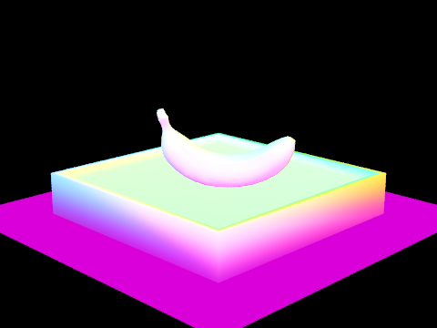
Normal shading · 16 camera samples/pixel · 480 × 360
Part 2: Bounding Volume Hierarchy
Normal shading · Large scenes

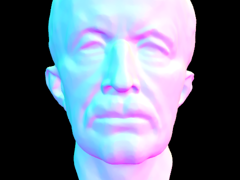
Normal shading · 50,801 polygons · 16 camera samples/pixel · 480 × 360

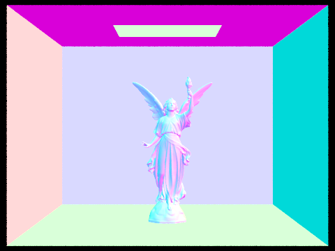
Normal shading · 133,796 polygons · 16 camera samples/pixel · 480 × 360

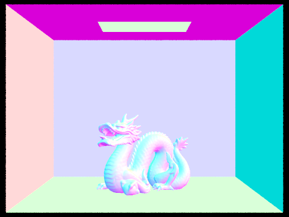
Normal shading · 100,012 polygons · 16 camera samples/pixel · 480 × 360
Timing comparison · Moderate scenes
Recorded October 22, 2026 · 8 threads · 1 camera sample/pixel · 480 × 360 · one run per scene and configuration. Renderer-only and whole-process elapsed times are shown separately; these subsecond measurements are noisy.
Without BVHWith BVH
| Scene | Without BVH (s) | With BVH (s) | Ratio |
|---|---|---|---|
| cow | 0.7044 | 0.0350 | 20.13× |
| teapot | 0.3629 | 0.0354 | 10.25× |
| beetle | 1.1452 | 0.0268 | 42.73× |
| Scene | Without BVH (s) | With BVH (s) | Ratio |
|---|---|---|---|
| cow | 0.8885 | 0.3974 | 2.24× |
| teapot | 0.4198 | 0.1033 | 4.07× |
| beetle | 1.2295 | 0.1235 | 9.95× |

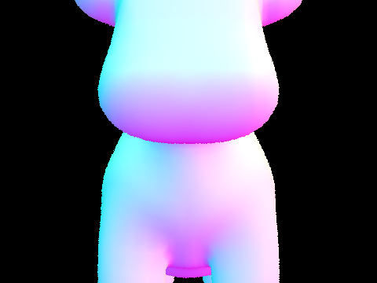
With BVH · normal shading · 1 camera sample/pixel · 480 × 360

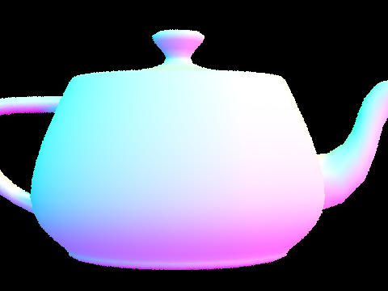
With BVH · normal shading · 1 camera sample/pixel · 480 × 360

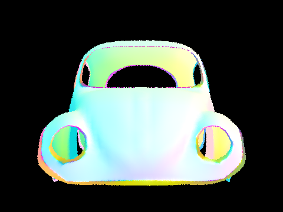
With BVH · normal shading · 1 camera sample/pixel · 480 × 360
Part 3: Direct Illumination
Visible emission

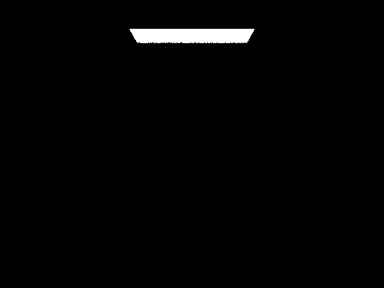
Depth 0 · 16 camera samples/pixel · 480 × 360
Matched sampling settings · Two methods

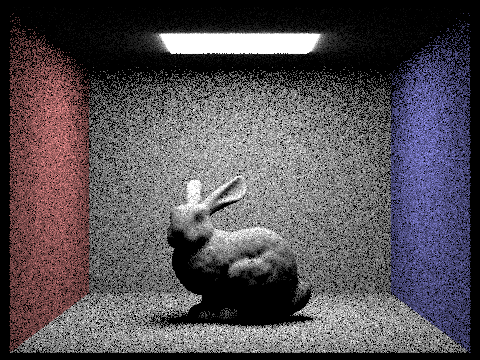
16 camera samples/pixel · -l 8 · maximum depth 1 · 480 × 360

16 camera samples/pixel · -l 8 · maximum depth 1 · 480 × 360

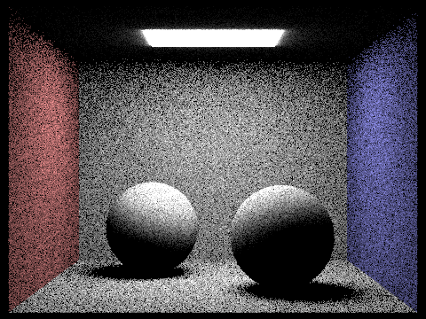
16 camera samples/pixel · -l 8 · maximum depth 1 · 480 × 360

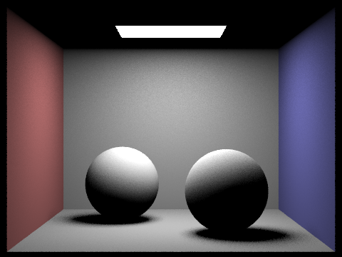
16 camera samples/pixel · -l 8 · maximum depth 1 · 480 × 360
Soft-shadow noise · Light importance sampling

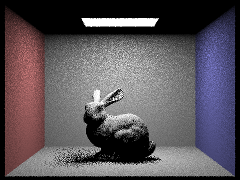
1 camera sample/pixel · maximum depth 1 · 480 × 360

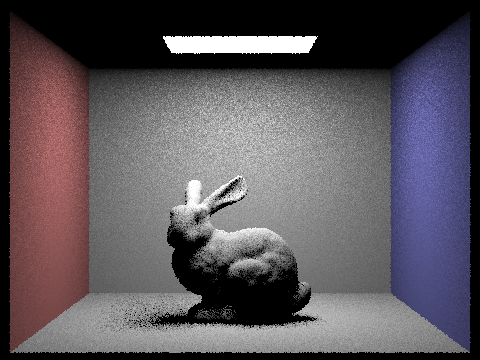
1 camera sample/pixel · maximum depth 1 · 480 × 360

1 camera sample/pixel · maximum depth 1 · 480 × 360

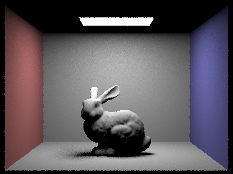
1 camera sample/pixel · maximum depth 1 · 480 × 360